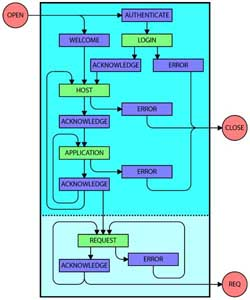

|
WARP version 0.9
Web Application Remote-access Protocol |
|
Index:
- Preface
- Packet Structure
Preface:
[NOTE: write a preface describing the objectives of the
WARP protocol]
Packet Structure:
Every WARP packet has the same structure, three sixteen bits (two octects)
values representing the packet header followed by a variable-length data body:
The REQ field:
The first sixteen bits in a packets are called "REQ"
and this value represents the request identificator for this packet. The WARP
protocol allows different requests to be handled at the same time on a shared
IO resource (like a socket). This technique is called multiplexing, and it is
used to reduce the resources used by the system when handling a request.
[NOTE: expand on why multiplexing requests
reduces resource utilization]
Usually, this field contains the ID of the request, but two values
are reserved by the WARP protocol to handle specific cases: The 0x0000 value
is used to set up the connection (see below, Connection Handling) and the 0xFFFF
value is used to terminate the connection in case of errors (see below, Connection
Termination). Thus, the values left for request handling range between 0x0001
and 0xFFFE, allowing a total of 65533 requests handled at the same time over
a single IO resource (see below, Request Handling).
The TYP field:
The second set of sixteen bits in a packets is called "TYP".
This value represents represents the data contained in the packet. Reference
tables for these values are given below for the three possible states of the
connection: Connection Handling, Connection Termination and Request Handling.
The LEN field:
The third set of sixteen bits in a packets is called "LED".
This value specifies the number of octets present in the DTA field. This value
can range between 0x0000 and 0xFFFF, allowing a length between 0 and 65535 octets
for the DTA field.
The DTA field:
The last part of a WARP packet is called "DTA" and contains
the actual data transmitted in the packet. The length of this part is determined
by the value specified in the "LEN" field of the packet, and can be
zero (no DTA present) when LEN is equal to 0x0000.
The format of the data contained in this field depends on the
value of the TYP field, tables are provided below.
Three kinds of data are allowed in the DTA field and these are:
- VALUE: a value is represented by 16 bits (2 octets) and can range between
0x0000 and 0xFFFF. Depending on the value of the TYP field, a value can be
interpreted as an unsigned value (between 0 and 65535) or as a signed value
(between -32768 and 32767).
- STRING: a string is an array of characters always encoded following the
ISO-8859-1 standard. A string is value is represented by a 16 bits (2 octets)
value indicating the encoded string length and the actual octets of the encoded
characters.
- RAW: sometimes it is useful to send raw data within packets (for binary
data transmission, or to avoid multiple string encoding and decoding). Raw
data is transmitted as-is (octets received from an HTTP client are transmitted
to a WARP server, and vice-versa), without any alteration.
Connection Handling:
Once a connection between WARP server and client has been estabilished (in
example, a socket is opened), before any request can be handled, the client
and server must negotiate their operation parameter. This is done sending packets
with the special CON value of 0x0000. Here is a description of what happens
between the client and the server:

- The client opens a connection to the WARP server and waits for a packet.
- The WARP server issues either a AUTHENTICATE or a WELCOME message.
- The client checks the protocol version implemented by the server (interrupting
the connection if not compatible with a REQ=0xFFFF packet), and sends a LOGIN
message if this is required to initiate the connection.
- If necessary the server checks the LOGIN message issued by the client, and
replies with an ACKNOWLEDGE or ERROR message.
- After authentication, the client transmits its configuration to the WARP
server, enumerating the virtual hosts it defines with HOST packets, and the
web-applications relative to the virtual host with APPLICATION packets.
- For each HOST and APPLICATION packet received, the server transmits an ACKNOWLEDGE
packet with a unique ID for each host and application, or replies with an
ERROR message in case the configuration specified by the client is not acceptable.
- When the client finishes transmitting all its configuration, the connection
is initalized, and requests can be processed. For each HTTP request received,
the client sends a REQUEST packet, with the appropriate host and application
IDs received during the initialization stage.
- The server replies to a REQUEST packet with either an ACKNOWLEDGE message
containing the current request ID (that will be used as REQ for the packets
transmitted in the request stage), or with an ERROR message.
- In case the server replies to the REQUEST message with an ERROR, the client
can safely keep the connection open, transmitting other REQUEST packets to
the server. When an ERROR message is issued as a reply to the client for any
other message type, the connection must be terminated and closed.
NOTE: At any time the connection can be interrupted issuing a FATAL error message
(REQ=0x0FFFF) both by the client and the server.
Copyright © 2000-2001, The
Apache Software Foundation. All Rights Reserved.